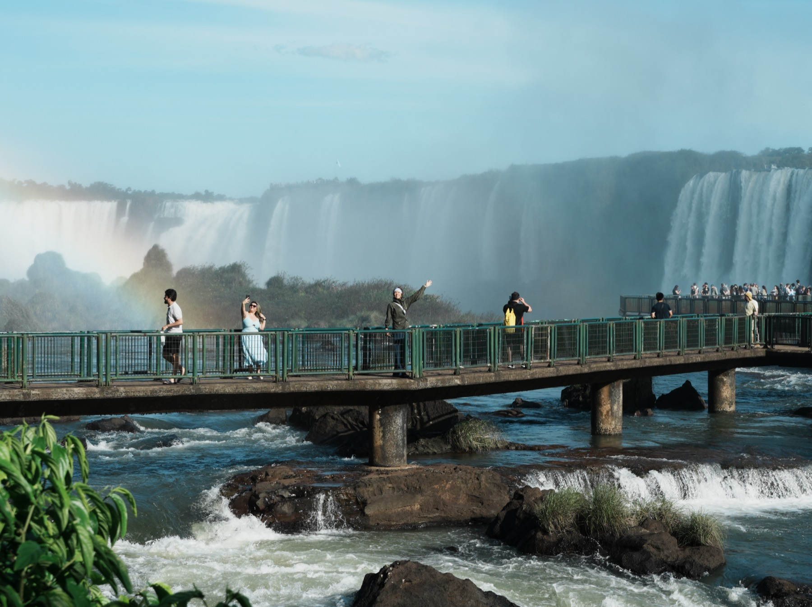
Chapter 03 · Land of the Toucan
巴西 · 大嘴鳥的國度
MAY 21 — JUN 16 · DAY 31–57 · 聖保羅 → 里約 → 伊瓜蘇 → 潘塔納爾 → 千湖沙漠
一個月,五個巴西:大都會的混沌、海灘的節奏、瀑布的轟鳴、濕地的野性、沙漠的寂靜。這個國度大到像五個國家,而我們把每一個都走了一遍。
The Route · 五個巴西,一筆畫完
São Paulo · 混沌大都會的一抹紅
沒有工作兩個月,人坐在聖保羅百貨吃 100 塊 RMB 的義大利麵,物價差不多啊,好像平行世界。名牌的定義全世界都一樣——是不是就得用這些東西顯示你的階級,就像芭比娃娃一樣。
— Alice & Ryan 的日記
這是個好衝突的國度。山上是基督像,山下是貧民窟與海灘派對,今天第一天見到了藍天。耶穌像用它的方式,守護這片土地。
— Alice & Ryan 的日記
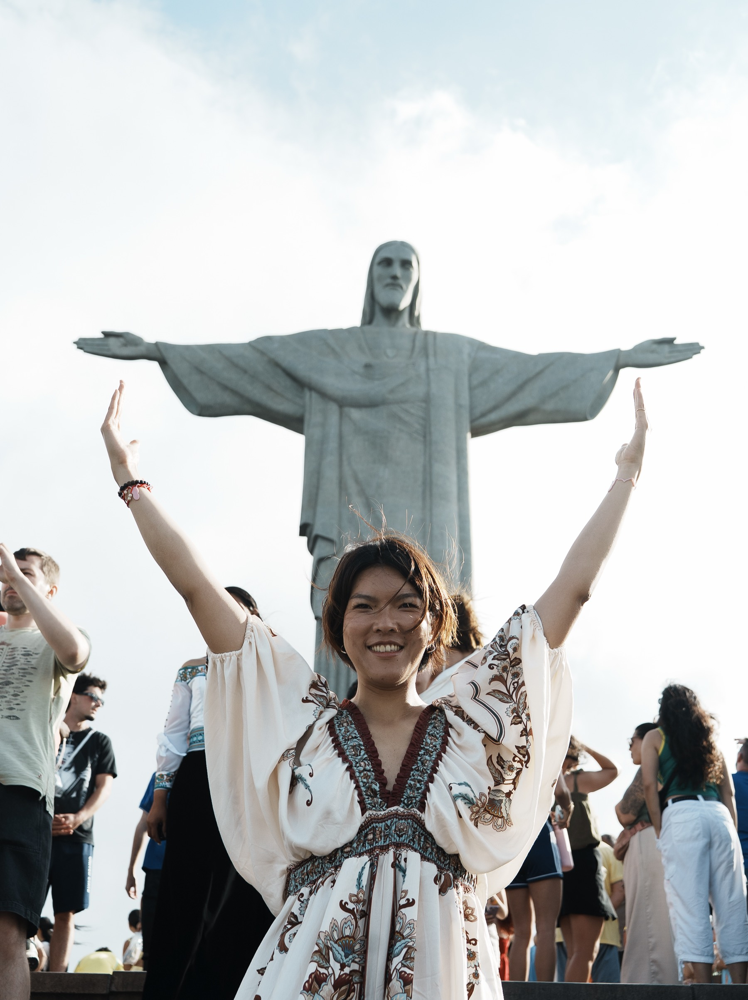
Cristo Redentor · 學祂張開手的那一刻
剛剛好的吃苦、剛剛好的享受、
剛剛好的陽光、剛剛好的時間、剛剛好的人。
— 里約隨筆 · 2026.05.27
原來幸福可以這麼簡單:
很冰很冰的水,就好開心好開心好開心。
伊瓜蘇快艇 · 2026.06.02
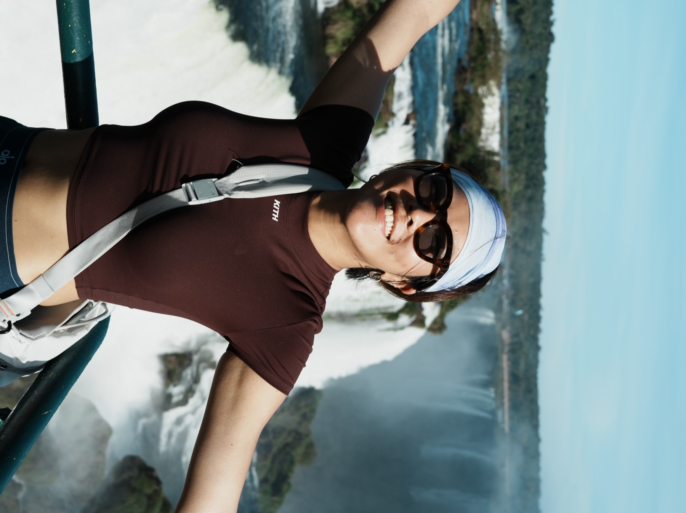
Iguazu Falls · 天氣之子回歸的那一天
一週多沒看到太陽,到伊瓜蘇中午出來萬里無雲——天氣之子的我們又回來了。最後決定不去巴拉圭,感覺只是去買太陽眼鏡蠻蠢的。好感動自己好愛自己的決定😂
— Alice & Ryan 的日記
我們那天真的非常幸運,一天看到七隻美洲豹,有四隻是導遊叫得出名字的🐆 河上 20 幾條船用無線電互相通報。導遊 Lino 不會英文但真誠無價,英文導遊 Victor 連你 iPhone 拍不到的都幫你拍。
— Alice & Ryan 的日記
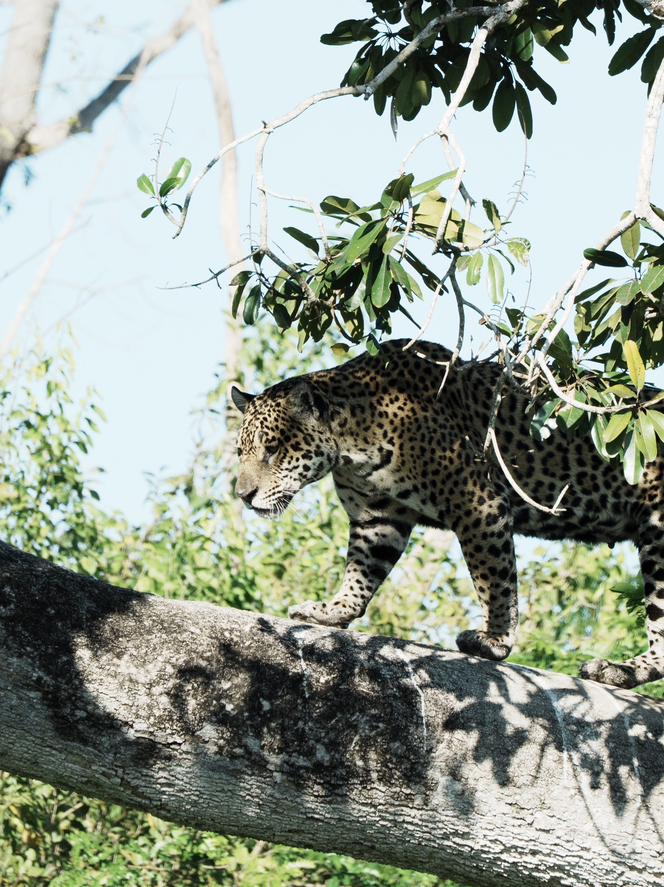
Porto Jofre · 七隻美洲豹的那一天,牠走上了樹幹
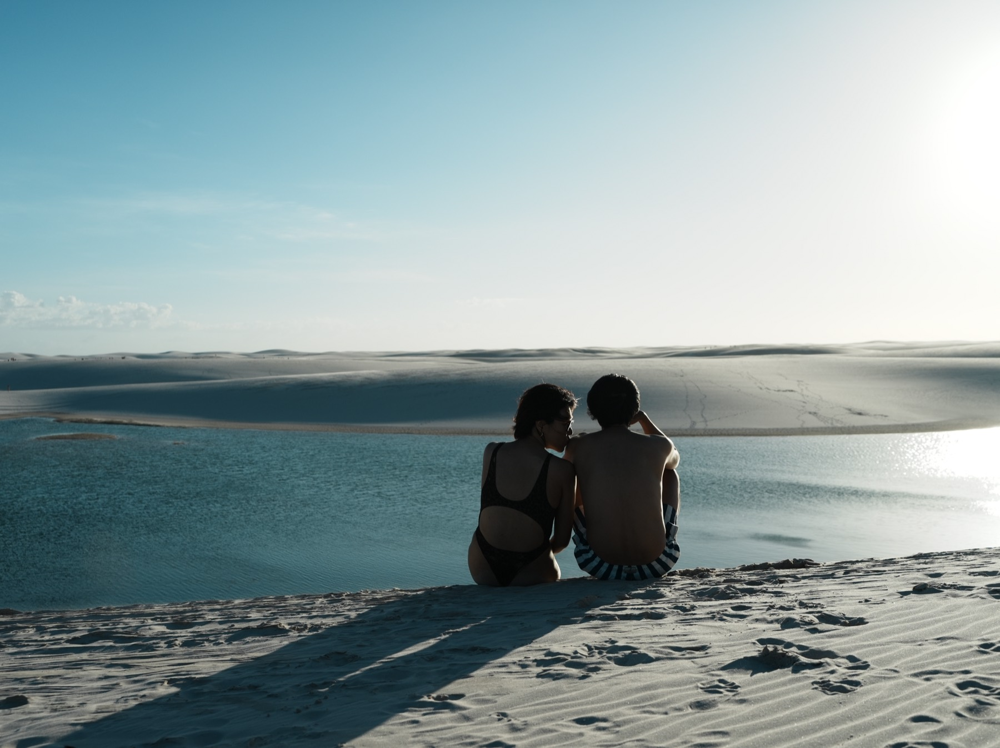
Lençóis Maranhenses · 潟湖邊,把腳泡進去的那個下午
白色沙丘配藍綠潟湖,小飛機俯瞰的規模真的震撼。在沙漠裡想通一件事:不要害怕,這個世界上有很多溫暖的體驗跟溫暖的人。一定要慢慢地走,慢慢地體會。
— Alice & Ryan 的日記
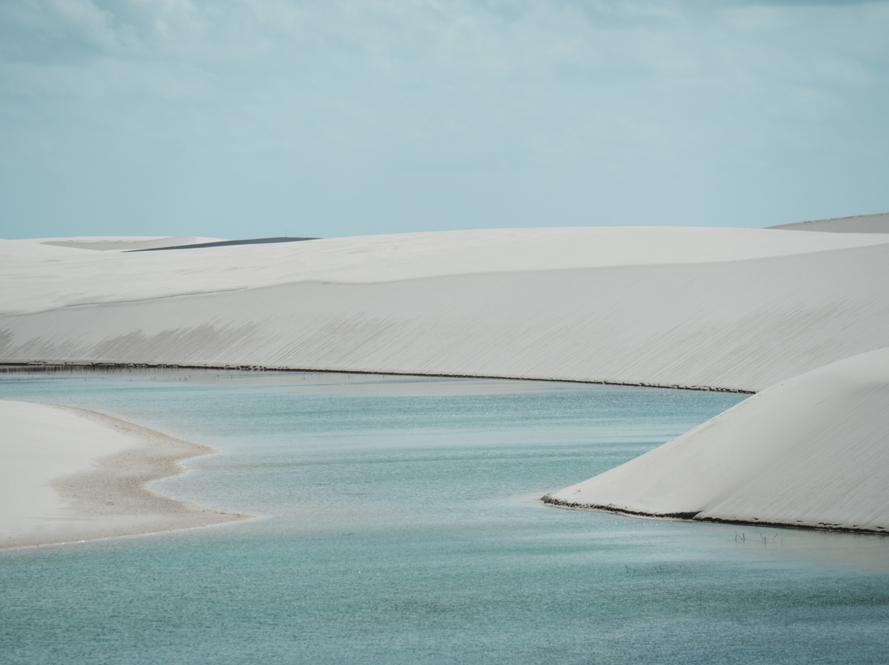
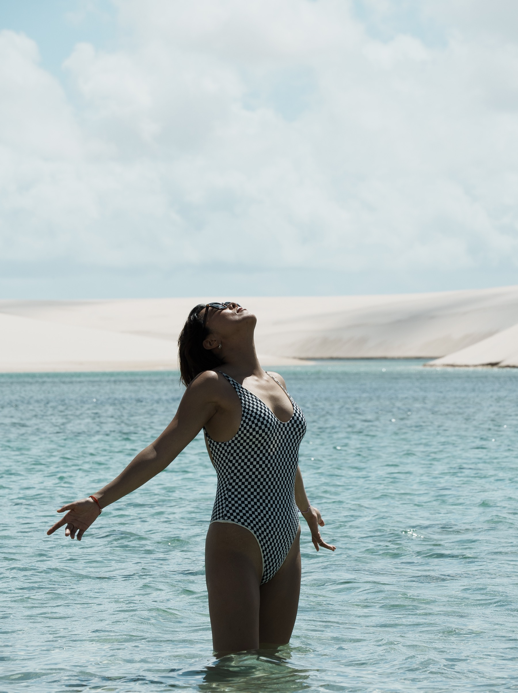
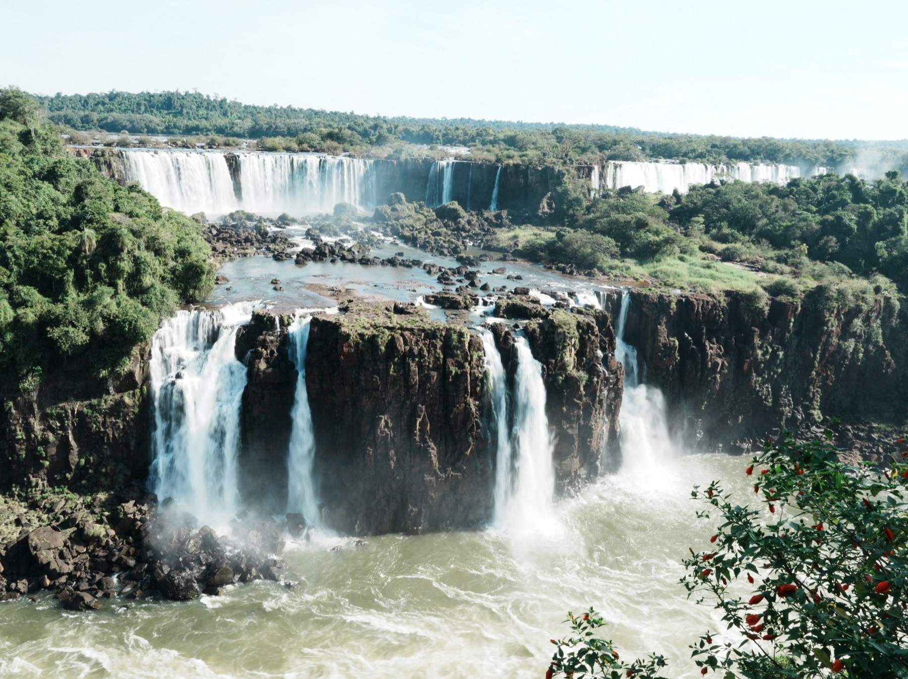
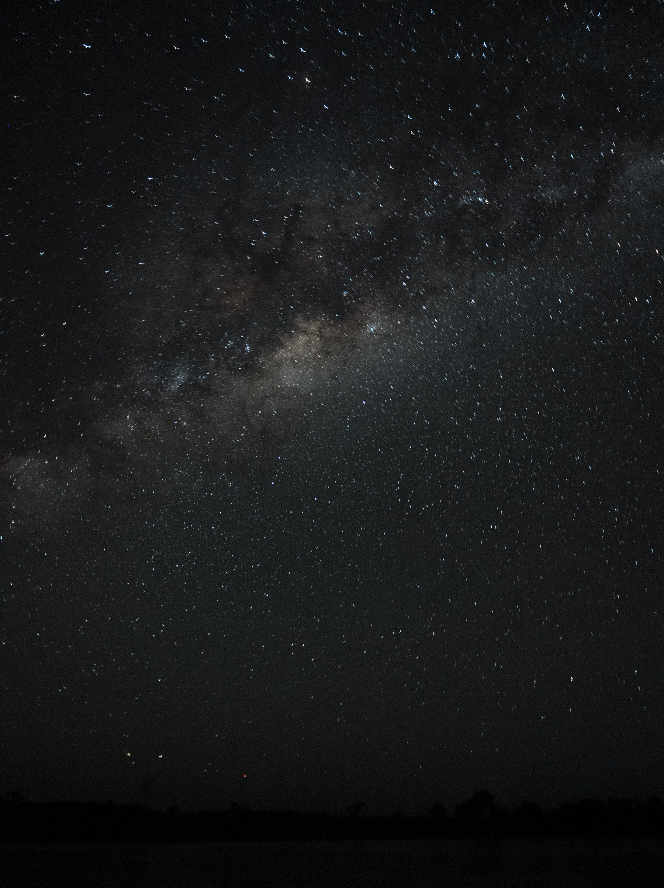
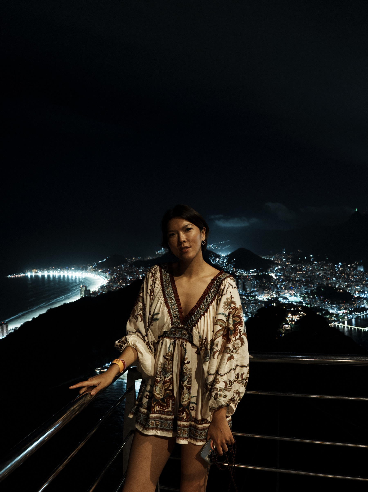
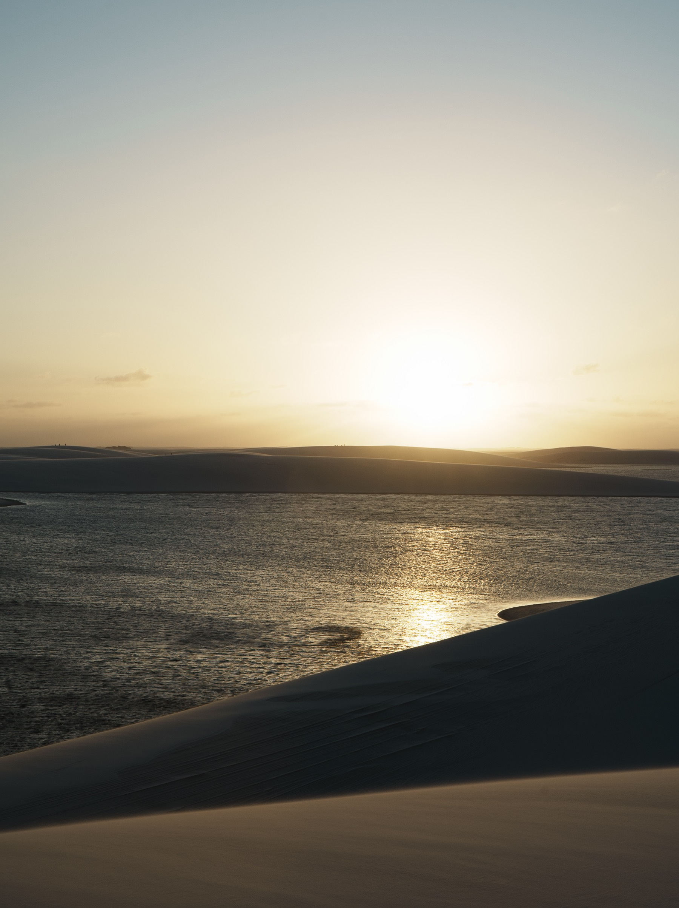
Before You Go · 通用原則